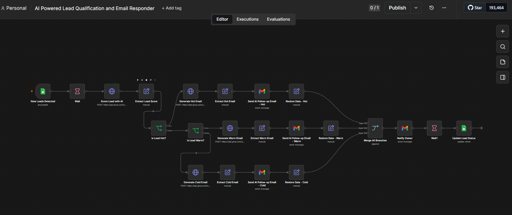

Automations
n8n and Zapier workflows built for lead scoring, tagging, notifications, and reporting.
AUTOMATION SAMPLES
AI-Powered Lead Qualification & Auto-Responder
A fully automated lead management system built in n8n that detects new leads, qualifies them using AI, and sends personalized follow-up emails — all within 60 seconds, without any human intervention. Built using n8n, Groq AI, Google Sheets, and Gmail.

More samples added regularly — reach out if you want to see something specific.